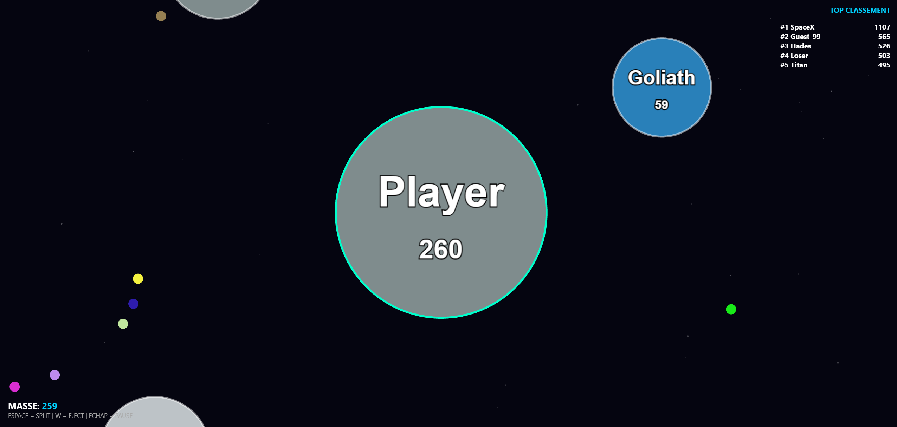
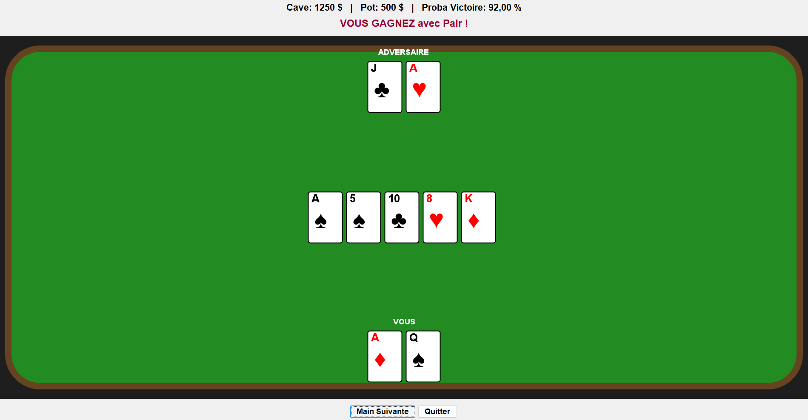
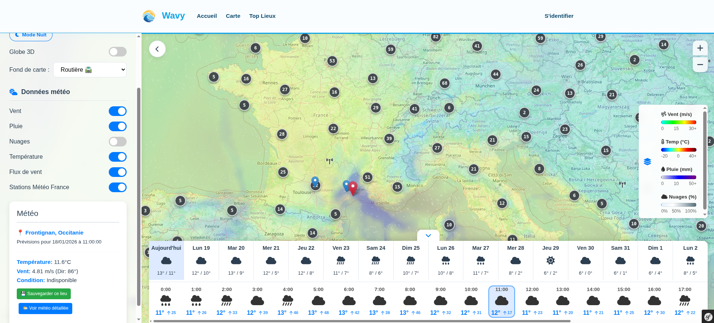
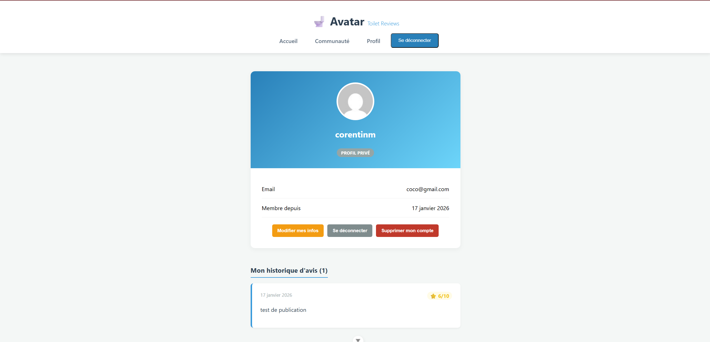
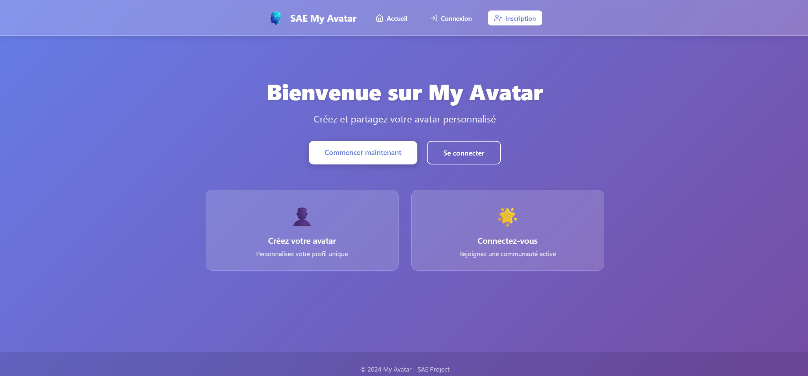
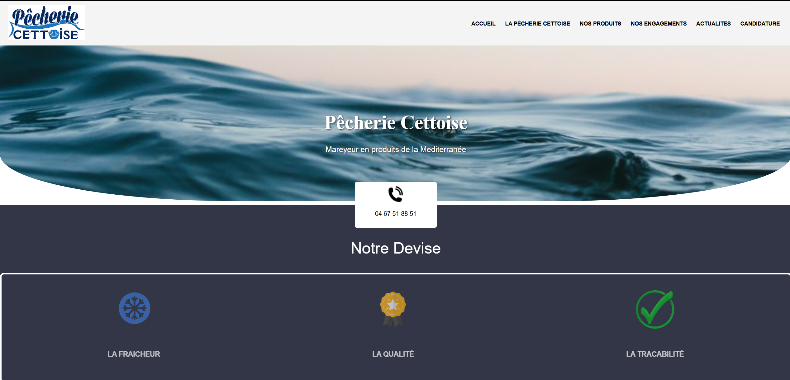
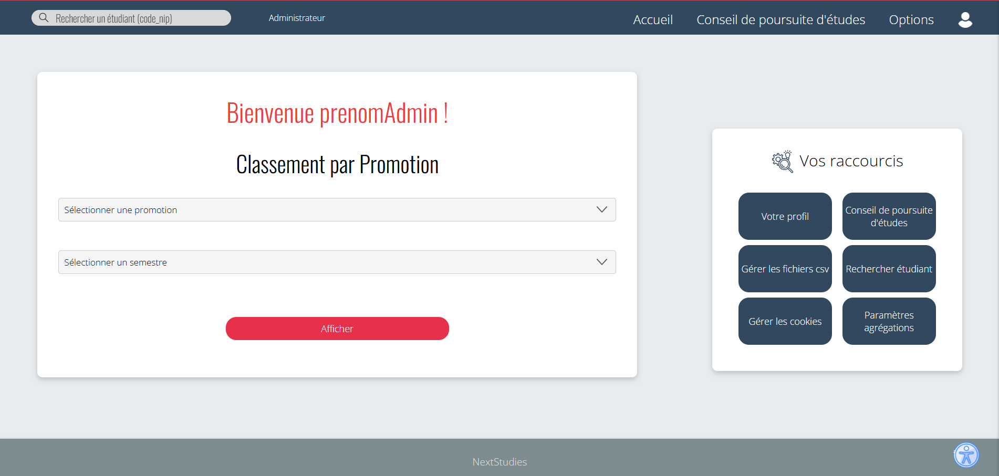
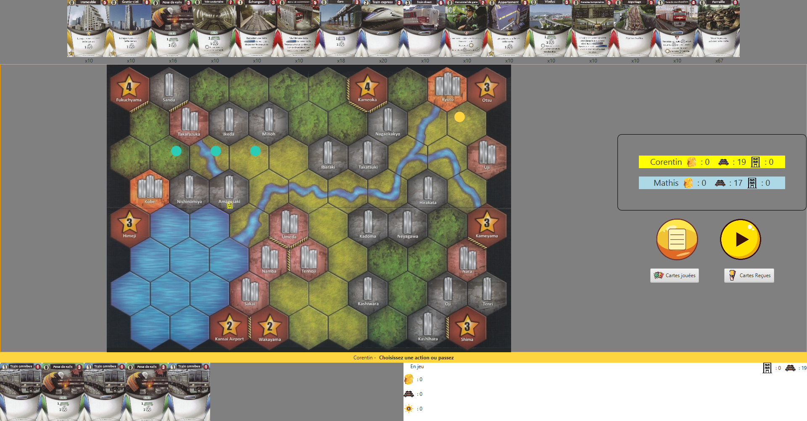
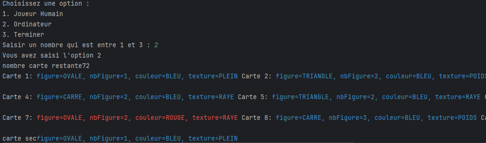

Projet – Jeu Orbital.io (Janvier 2026)

Un projet de développement d'un jeu web dans l'espace en WebGL (PIXI.js), se basant sur une zone de jeu avec des bots et un système d'IA prédictif à base de comportements de fuite/poursuite.
Projet – Calculateur de Probabilités Poker (Avril 2026)

Ce projet consistait à développer un calculateur de probabilités pour le Texas Hold'em en utilisant les principes de la programmation fonctionnelle en Scala, couplé à une interface visuelle réactive pour afficher les statistiques en temps réel.
SAE – Application Météo Nautique (Septembre 2025 - Avril 2026)

Dans le cadre de cette SAE, nous avons développé une application web destinée aux amateurs de sports nautiques, permettant de consulter les conditions météorologiques en temps réel. J'ai été responsable de la pièce maîtresse de l'application : la carte interactive.
SAE – Site de Critiques Full Stack (Novembre 2025 - Janvier 2026)

Pour ce projet de fin de semestre, nous avons réalisé une architecture complète séparant le Back-end (API) et le Front-end (Client). Nous avons créé une plateforme de critiques communautaire.
Projet – My Avatar (Service centralisé d'avatars) (Octobre 2025)

Ce projet consistait à développer un clone du service Gravatar, permettant de centraliser la gestion des photos de profil via une adresse email. J'ai travaillé principalement sur l'architecture backend et la sécurité.
tagiaire Développement Web – Stage (Février 2025Avril 2025)

Lors de mon stage à La Pêcherie Cettoise, j'ai conçu et développé de manière entièrement autonome un nouveau site web avec une architecture MVC en PHP/MySQL, en remplaçant la solution obsolète et en préparant le terrain pour un futur e-commerce.
SAE – Application Web (Septembre 2024 - Janvier 2025)

Dans le cadre de ce projet, j'ai conçu une application web complète en PHP et SQL pour gérer le suivi académique des étudiants. L'objectif principal était de créer une plateforme capable de gérer les informations liées aux étudiants, leurs résultats, et leur éligibilité à différents programmes universitaires.
SAE – Jeu de société « TRAINS » (Janvier 2024 - Juin 2024)

Dans le cadre de ma formation, j'ai participé au développement d'une version numérique d'un jeu de société en Java. Ce projet m'a permis d'adopter une approche orientée objet pour modéliser le jeu et en créer une version fonctionnelle à travers une interface interactive.
SAE E3SETE – Jeu de cartes numérique (Octobre 2023 - Décembre 2023)

Dans le cadre de ma formation, j'ai participé au développement d'une version numérique d'un jeu de cartes inventé par mon professeur, en utilisant Java. Ce projet m'a permis d'adopter une approche orientée objet pour modéliser le jeu et en créer une version fonctionnelle à travers une interface en ligne de commande, sans nécessiter d'interface graphique.